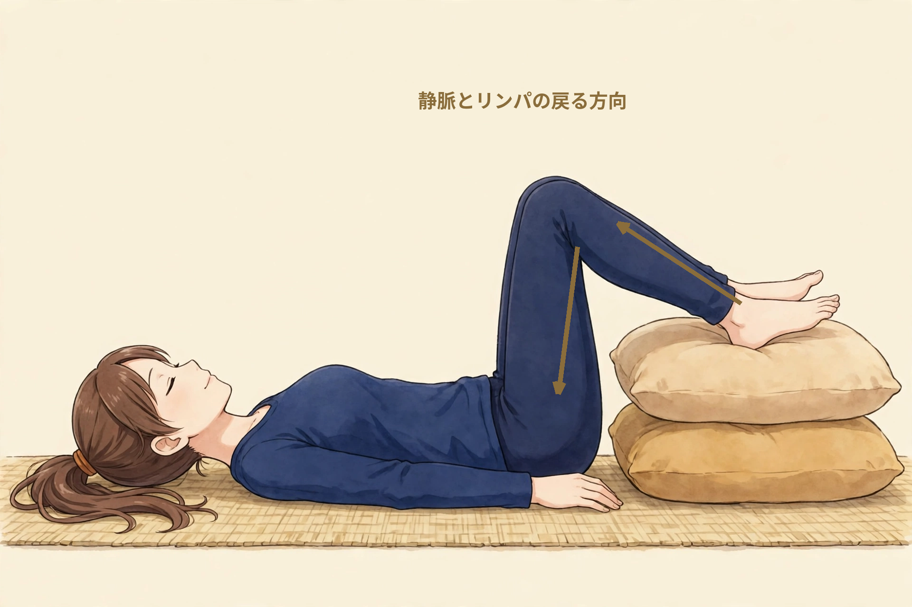

トップ › 美容整体の専門解説 › むくみと血行・リンパの巡り
CIRCULATION
むくみと血行・リンパの巡り
夕方になると靴がきつい、脚が重くてだるい、朝は顔がむくんで目が開きにくい。むくみは、多くの女性が日常的に感じている不快感です。その正体は、体の「巡り」と「戻る力」の問題です。
難波での立ち仕事、デスクワーク、御堂筋線での長い通勤。脚を動かさない時間が長いほど、むくみは強くなります。このページでは、むくみが起こる仕組みと、筋ポンプ・リンパの働き、日常でできる工夫を解説します。
むくみはなぜ起こるのか
私たちの体の約6割は水分です。血液は心臓から全身へ送り出され、細胞に栄養と酸素を届け、老廃物を受け取って心臓へ戻ります。このとき、血管からしみ出た水分の一部は、リンパ管に回収されて戻っていきます。むくみは、この「出ていく水分」と「戻る水分」のバランスが崩れ、皮下に水分がたまった状態です。
とくに脚は、心臓から最も遠く、重力に逆らって水分を戻さなければならない場所です。戻す力が弱くなったり、同じ姿勢で長くいたりすると、脚からむくみ始めます。夕方に脚が重くなるのは、一日の水分が脚にたまった結果なのです。
戻す力は「筋ポンプ」とリンパ
静脈の血液とリンパ液を心臓へ押し戻す原動力は、筋肉の動きです。ふくらはぎの筋肉が縮むと、まわりの静脈とリンパ管が押され、中の液体が上へ送られます。歩くたびにこのポンプが働くため、ふくらはぎは「第二の心臓」とも呼ばれます。
逆にいえば、筋肉を動かさない時間が長いほど、ポンプは止まったままになります。デスクワークで座りっぱなし、立ち仕事で同じ場所に立ちっぱなし。どちらも、ふくらはぎのポンプが働きにくい状態です。むくみ対策の基本は、このポンプをこまめに動かすことにあります。
脚を上げて休む意味
脚を心臓より高い位置に上げると、重力が戻る流れを助けてくれます（図1）。ポンプの力に頼らなくても、水分が戻りやすくなるため、帰宅後の短い時間でも脚が軽く感じられます。

やり方は簡単です。仰向けになり、クッションや折った布団にふくらはぎを乗せて、10〜15分休みます。このとき、足首をゆっくり回したり、つま先を手前・向こうへ倒したりすると、筋ポンプも合わせて働きます。仕事帰りの夜、湯船のあとの習慣にすると続けやすい方法です。
日常で巡りを助けるポイント
- こまめに足首を動かす：座ったまま・立ったままでも、かかとの上げ下げや足首回しでポンプが働きます。
- 1時間に一度は姿勢を変える：立つ・座る・歩くを切り替えるだけで、巡りは変わります。
- 湯船に浸かる：温めと水圧の両方が、巡りを助けます。シャワーだけの日が続く方は、週に数回でも湯船を。
- 締めつけの強い靴・服を続けない：足首や膝裏を強く締めつけると、戻る流れの妨げになります。
- 水分を控えすぎない：水分を控えると体はかえって水をため込もうとします。こまめな水分補給が基本です。
リンパの流れの特徴
リンパ管は、全身に張り巡らされた細い管のネットワークです。血管からしみ出た水分や老廃物を回収し、首の付け根（鎖骨の下あたり）で静脈に合流します。心臓のような強いポンプを持たないため、流れはゆっくりで、筋肉の動きと呼吸の助けを受けて進みます。
流れが滞ると、水分だけでなく老廃物もたまりやすくなり、だるさや冷えを感じやすくなります。当サロンのオイルマッサージでは、このリンパの流れの方向に沿って、末端から体の中心へ向けて手を進めることを大切にしています。
むくみやすい生活パターン
むくみは、その日の過ごし方に正直に表れます。塩分の多い食事が続いた日、アルコールを飲んだ翌日、睡眠不足の朝、運動不足の週末明け。いずれも、巡りと水分バランスが乱れやすい条件です。
女性の場合は、月経周期との関わりも見逃せません。月経前は体が水分をため込みやすい時期で、体重が1〜2kg増えることも珍しくありません。これは一時的な体のリズムによるものです。周期とむくみの関係を知っておくと、「太った」と落ち込まずに済みます。詳しくは「女性ホルモンと年代別の変化」で解説しています。
オイルマッサージと巡り
オイルマッサージは、手の圧で筋肉をゆるめ、リンパの流れの方向へ液体を押し進めるケアです。ふくらはぎから太もも、脚の付け根へと、戻る方向に沿って進めることで、脚の軽さを感じやすくなります。
当サロンでは、美容整体で骨盤まわりの土台を整えてから、オイルで全身をケアします。脚の付け根や骨盤まわりは、脚から戻る流れの「出口」にあたる場所です。出口が詰まっていては、ふくらはぎだけを流しても戻りにくい。全身のつながりとして巡りを見ることが、当サロンの考え方です。
顔のむくみ・朝のむくみ
朝の顔のむくみは、寝ている間に顔へ水分が移動するために起こります。うつ伏せ寝や、枕の高さが合わないことも一因です。前の夜の塩分やアルコールも、朝のむくみに表れます。
朝のケアとしては、蒸しタオルと冷たいタオルを交互に当てる、首と鎖骨まわりをやさしくなでる、耳の下から首すじへ流す、といった方法があります。首と鎖骨はリンパの合流点に近い場所です。メイク前に1分でも取り入れると、顔の印象が変わります。
むくみと冷えの関係
むくみと冷えは、互いに影響し合います。巡りが滞ると、温かい血液が末端に届きにくくなり、手足が冷えます。冷えると血管が縮み、筋肉も固くなるため、さらに巡りが滞ります。この循環に入ると、脚は「冷えて、重くて、むくむ」状態が続きます。
対策は、温めることと動かすことの組み合わせです。湯船、温かい飲み物、足首を動かす小さな運動。冬の難波は地下街が暖かく、外は冷えるため、温度差で自律神経も乱れやすくなります。帰宅後の温め習慣を、むくみ対策の土台にしてください。
むくみの種類と見分け方
日常的なむくみの多くは、夕方に強くなり、朝には引いている「一時的なむくみ」です。これは生活習慣と姿勢によるもので、このページで紹介したケアの対象です。
一方で、朝になっても引かない、片脚だけが急に腫れる、押した跡が長く残る、息苦しさを伴うといった場合は、体の病気が背景にある可能性があります。その場合は、施術の前に医療機関への受診をおすすめします。むくみのすべてをサロンで解決しようとせず、見分けることが大切です。
季節とむくみ
夏は、暑さで血管が広がり、冷房で脚が冷えるという、むしろむくみやすい条件が重なります。冷たい飲み物が増え、湯船に浸からない日も増えがちです。冬は、厚着と運動不足、寒さによる巡りの低下が背景になります。
季節ごとに「むくみやすい理由」は変わります。夏は冷やしすぎに気をつけて足首を動かす、冬は温めと湯船を意識する。季節に合わせた小さな工夫を、施術の際にもお伝えしています。
施術後の過ごし方
施術で巡りが動き出すと、その日はトイレが近くなることがあります。これは体内の水分が動き始めたサインです。水分を控えず、温かい飲み物をこまめに取ることがおすすめです。
施術当日は、激しい運動や長時間の飲酒は控えめに。湯船にゆっくり浸かり、早めに休むことで、整った巡りが体に馴染みやすくなります。施術の効果を日常に持ち帰るための、小さな約束です。
むくみチェックリスト
当てはまるものが多いほど、戻る力が弱くなっている目安です。
- 夕方になると靴やブーツがきつく感じる
- 靴下の跡がなかなか消えない
- 朝、顔やまぶたが腫れぼったい
- 脚を押すと、跡がしばらく残る
- 一日座りっぱなし・立ちっぱなしの日が多い
- 湯船に浸からず、シャワーで済ませる日が多い
- 月経前はとくに体が重く感じる
靴とむくみ
靴選びも、むくみに影響します。ヒールの高い靴は、ふくらはぎの筋肉が縮んだまま固まりやすく、ポンプの働きが小さくなります。サイズの合わない靴で足首の動きが制限されることも、巡りの妨げです。
仕事でヒールが必要な方は、通勤だけでも歩きやすい靴に替える、仕事の合間に足首を回す、といった工夫が有効です。帰り道、難波から一駅分歩くような日は、巡りにとっては良い運動になります。無理のない範囲で、歩く時間を味方にしてください。
関連する症状・お悩み
よくあるご質問
着圧ソックスは使ったほうがよいですか？
日常的なむくみには、適度な着圧が助けになることがあります。ただし、強すぎる締めつけや、膝裏を食い込ませる履き方は逆効果です。就寝時の使用は製品の指示に従い、しびれを感じたら使用を中止してください。
施術を受けた日は、脚が軽くなりますか？
巡りを促すケアのあとは、脚の軽さを感じる方が多いです。感じ方には個人差がありますが、施術後は水分を控えず、湯船で温まって早めに休むことで、その状態が馴染みやすくなります。
初めてでも大丈夫ですか？
はい。当サロンは完全予約制・完全個室です。最初にカウンセリングで体の状態や姿勢のクセをうかがい、無理のない内容から始めます。施術の前後で感覚の違いを一緒に確認しながら進めますので、初めての方も安心してご利用いただけます。
場所と予約方法を教えてください。
大阪市浪速区幸町1-2-9 RE-005 502号、JR難波駅から徒歩5分です。ご予約はLINE公式アカウントで受け付けています。入室方法はご予約確定後にご案内します。
専門解説シリーズ
施術者について
平賀 伸人（ひらが のぶひと／男性セラピスト）｜施術歴30年。鍼灸師（国家資格）・登録販売者・アロマセラピスト・パーソナルトレーナーの資格を持ち、オイルマッサージと美容整体を、その日の状態とご希望に合わせて組み合わせて施術します。このページの内容は、施術者の知識と経験をもとに作成しています。
料金・店舗情報
オイルマッサージ＋美容整体 90分 10,000円（税込）｜コースは1つだけです。有料の追加オプションの販売はありません。お支払いは現金のみです。
住所：大阪市浪速区幸町1-2-9 RE-005 502号（JR難波駅 徒歩5分）｜営業時間：月〜土 17:00〜22:00／日曜 12:00〜22:00｜女性専用・完全予約制・シャワー完備の完全個室｜当サロンでは鍼灸施術は行いません。
ご予約・お問い合わせ
ご予約はLINE公式アカウントで受け付けています。ご希望の日時をお送りください。変更・キャンセルはLINEでご連絡ください。キャンセル料はいただきません。